M 3 (War-II)
Lecture - 22
Disjoint Set Union - Module 3 (War-II)
Welcome back to the second segment of our discussion on ‘War.’ This will not make any sense if you have not seen the previous video, where we actually introduced the problem. Just in case you have stumbled on this directly, then please do make sure that you watch the first part first.
(Refer Slide Time: 00:30)


If you remember, when we stopped there, we said that we could use disjoint sets to fairly naturally model the friendships. But we were not sure how the enemies can be accounted for. Let me just say that one way of tracking the enemies is to just track the enmities between the leader elements. It turns out that will be sufficient to make all the inferences that we need to make.
In particular, let us say that at some intermediate stage, you have developed some of these friendship clusters. Let us say that you know that there is some pair of people, one from the first cluster and one from the second that are enemies, then you can apply your rules to observe that this actually implies that all of these people from the first cluster are enemies with all the people from the other cluster.
We are going to just succinctly make a note of that by adding an enemy relationship between the leaders. When we get an ‘ARE ENEMIES?’ query, basically, we ask ourselves, if the representative elements in the sets that the people belong to, if they are enemies. That is essentially necessary and sufficient to produce an affirmative answer to this query. Now, this will become clearer as we go along.
But the foundations are the following. We will have a standard DSU data structure to keep track of the friendships between people as they evolve. We will have an array of length N to keep track of the enemies (just of the leaders). Because of the way enmities evolve, and this is something that, as I said, will probably become clearer later. It is sufficient for every leader element to point to at most one other leader element, saying, that that is my current enemy.
You will never be in a situation where you need to point to the leader of more than one cluster in your friendship network. We will see why that is as we go along. But in terms of what you need to write down the code, it is going to be your standard disjoint set union data structure + an extra array, which is the book-keeping that we were talking about, to keep track of what is going on with the enemies.
(Refer Slide Time: 02:56)
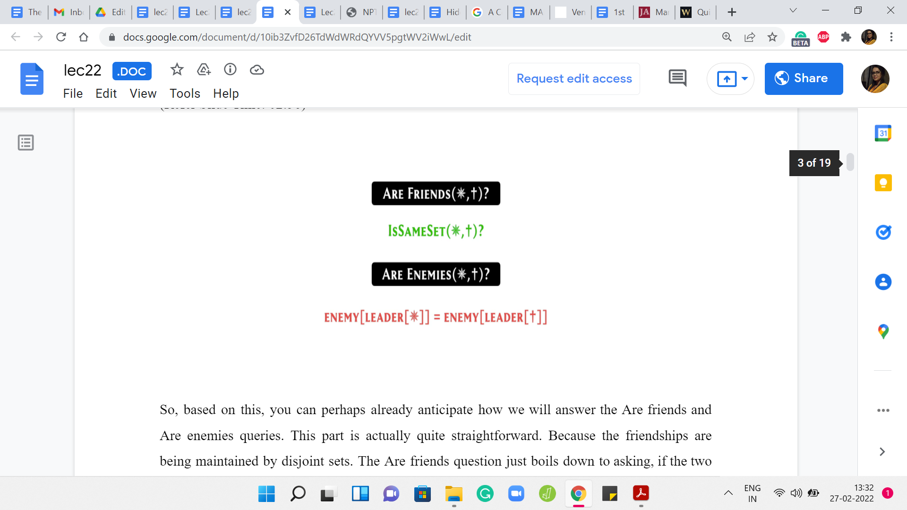
Based on this, you can perhaps already anticipate how we will answer the ‘ARE FRIENDS?’ and ‘ARE ENEMIES?’ queries. This part is actually quite straightforward. Because the friendships are being maintained by disjoint sets, the ‘ARE FRIENDS?’ question just boils down to asking if the two people on whom the query is being made belong to the same cluster or the same set or not. We have already seen this as the ‘isSame’ set helper function.
All that this does is check if the leader elements of the sets that these two people belong to are the same or not. The answer is ‘yes’ or ‘no,’ just based on that. For the ‘ARE ENEMIES?’ query, it turns out that two people are enemies if and only if their leaders are enemies. If the leader elements of your set are enemies, then of course, by applying the rule which says that the enemy of a friend is an enemy, you can conclude that the two people who are involved are enemies as well.
If the two people who are involved are enemies, then very similarly you can infer that the leaders of their sets are also going to be enemies. That is all that you need to do here. You need to go to the leader elements for the two people on whom the query is being made. You need to check if they are mutual enemies. This information is being tracked by this enemy array. That is all that you need to check here.
That takes care of two of the four queries that, that we had to worry about. It feels like half the battle won, at least psychologically. But it turns out that the bulk of the work really is in making sure that you build up an accurate picture as you receive operations of the first two kinds, which are the MAKE FRIENDS and the MAKE ENEMIES operations. There you want to make sure that you are building up an accurate picture and you are drawing all the inferences that you can. Let us turn to those operations now and see how we will deal with those.
(Refer Slide Time: 04:52)


We have ‘MAKE FRIENDS.’ Remember that friendships are being tracked by DSU essentially. The natural thing to do here is to interpret this as a union operation. If you remember what we do typically when we are trying to do a union is to first approach the leader elements of the sets that these people belong to. Of course, at the very initial stages, they will be the elements of the people themselves.
But, we are talking about a generic situation. We approach the leader elements. Of course, first, we do check if these leaders are already enemies. If this is the case, then you cannot make friends out of people who are already enemies. Notice that if the leader elements of ‘your set’ are already enemies, then by inference, you are enemies as well. You already have this information.
This will be the situation where you have a contradiction. Your output -1 and you move along. But suppose there is not a contradiction. Then what are the possible scenarios that could arise? Well, it is possible that the leader elements are the same. If that is the case, then this picture is not very accurate. But if the leader elements are the same, then that means that the two people that you were given in this operation are already friends.
There is no work to be done. You could just, again, move along, this time for a different reason. Now, suppose that they are not already friends. But let us also say that the two leaders have no known enemies. If they have no known enemies, then when you merge these two clusters, there are no additional inferences to be made. There are no additional inferences to be made in the context of the enemies.
We just do a simple union. Once again, at this point, we are done. But, there are some cases to be taken care of if one or both of these leader elements already have known enemies of their own. Let us take a look at how that could pan out. We know that we have to establish this friendship here. That is a non-contradictory operation and that is going to happen.
(Refer Slide Time: 07:15)
 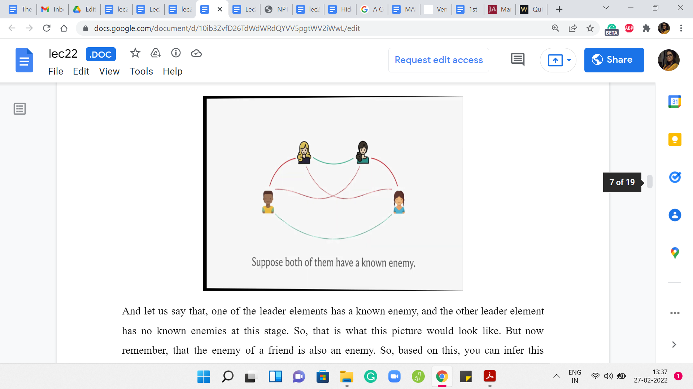
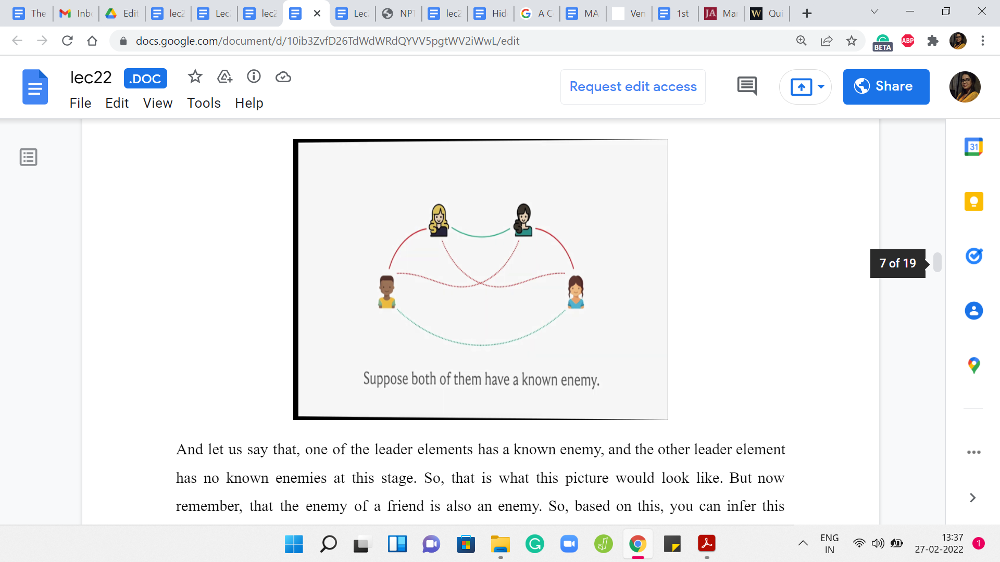
Let us say that one of the leader elements has a known enemy, and the other leader element has no known enemies at this stage. That is what this picture would look like. But now remember that the enemy of a friend is also an enemy. Based on this, you can infer this additional enmity relation. So once you merge the two sets, you want to make sure that the new leader keeps track of the fact that the leader has an enemy in this, in this other leader element. This enemy is going to be the leader element of some other set.
We would want to make a note of that. Normally, if the leader element does not change, after you do the union, you actually do not have to do anything. But it is possible that after the union, the leader element changes. In that case, you do have to update the enemy array to make sure that you continue to track this enmity.
Similarly, you could be in a situation where both of these leaders have a known enemy. This is what that situation is going to look like. Once again, by applying the rule of the fact that the enemy of a friend is also an enemy, by applying this rule twice, you infer these two new rivalry relationships. But now based on this, can you say something more? Take a pause here to see if you can infer any new relationships based on the picture that we have built out so far.
If you had a chance to think about this, you may notice that these two enemies also become friends after we have made the inferences that we just made. The reason for this is that if you have a common enemy, then you are friends. These two people actually have two common enemies now. This is essentially how the rules would play out in this situation. But in terms of the implementation, what would we like to do?
Now we not only make the two people friends that we were supposed to make friends according to our operation, but we actually can establish a new friendship. There will be two pairs of clusters that get merged. We want to ensure that the leaders, the potential new leaders of these two clusters, record their enmity. That, again, the information about the enmity is carried forward as we would need it to.
(Refer Slide Time: 09:44)
 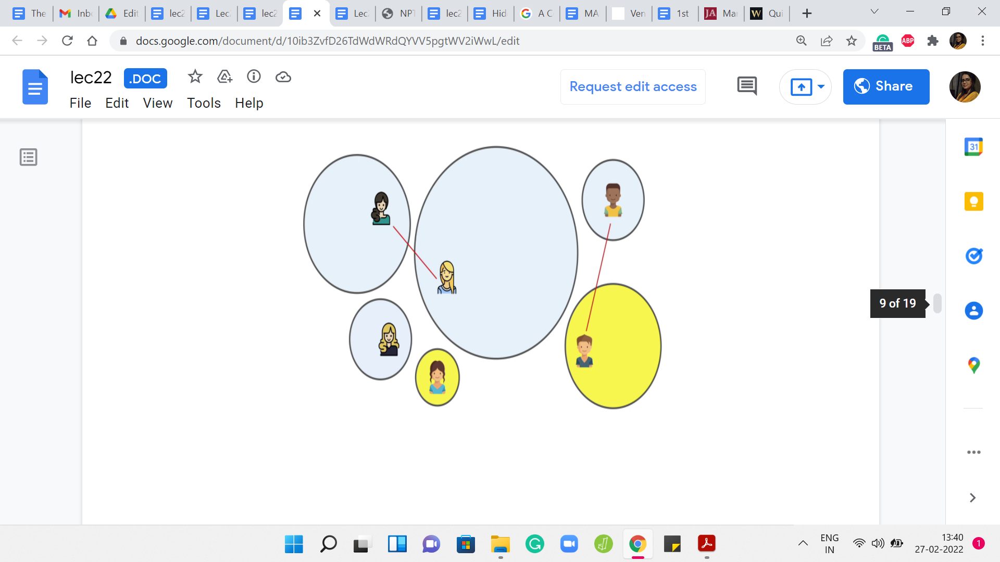 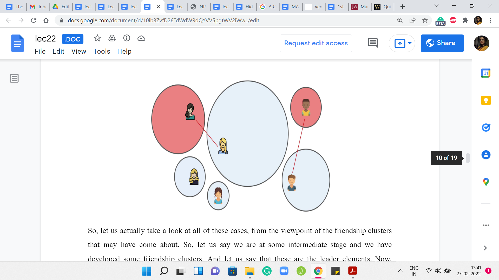
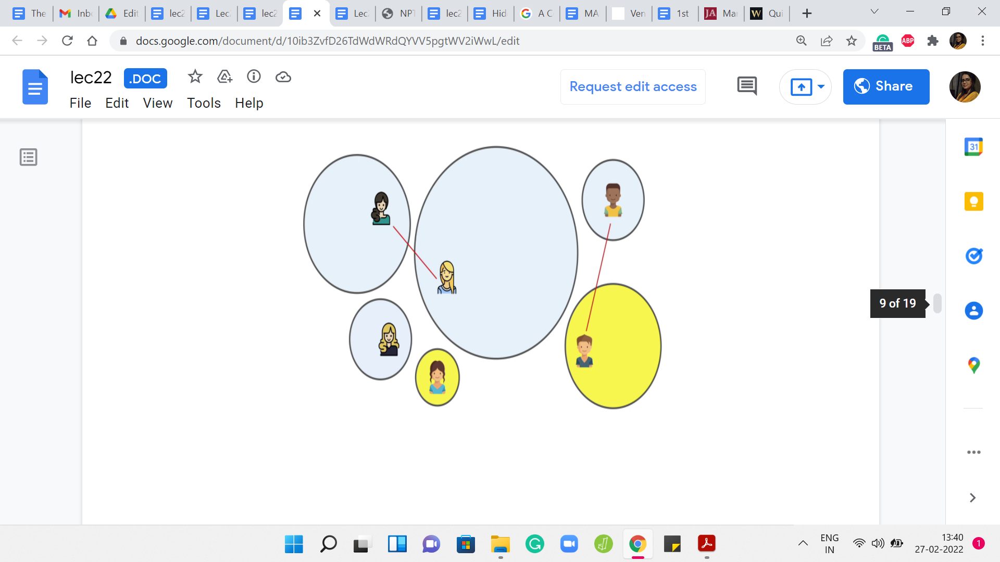 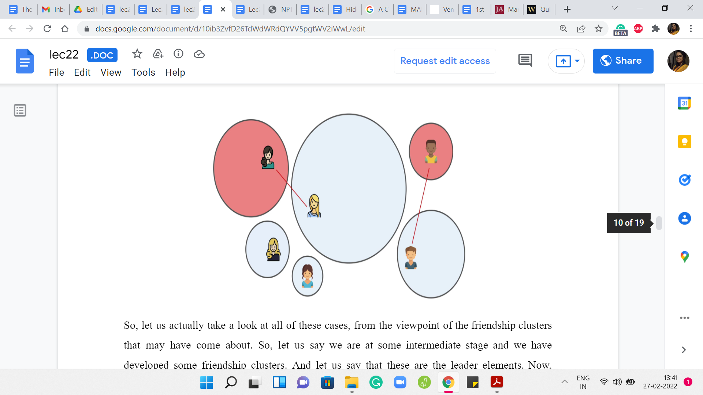
Let us actually take a look at all of these cases, from the viewpoint of the friendship clusters that may have come about. Let us say we are at some intermediate stage and we have developed some friendship clusters. Let us say that these are the leader elements. Now, suppose that you have some known enmities between leaders. Notice that these will always show up as pairs of clusters. You will never have enmity show up in any other way.
For example, you will never have this sort of situation. Again, take a moment here, if you need to, to think about why this picture is not a valid one? Why this would never arise? The reason this would never arise is that if you had the structure, then notice that the two clusters on the left would not really continue to persist as disjoint clusters because you have a common enemy situation here.
These two clusters would have actually been merged if our algorithm was doing its job correctly up to this point. This picture never really arises. The clusters pair up in terms of known enmities, and some clusters are just hanging in isolation. The cases that we saw so far were the following. First, we said that maybe both of the leaders who are going to become friends have no known enemies.
That is essentially a simple merger of two isolated clusters. It is also possible that one of them has a known enemy and the other does not. In this case, what we said was that we will do a simple merge as before but it is possible that after this merger, the leader gets updated. Then we have to make sure that the leader, the enemy pointer, is pointing correctly from the new leader to the old enemy.
You could also be in a situation where the two leaders who are coming together, both of them have known enmities. In this case, what was happening is that you not only merge these two clusters, but you also merge the other two clusters that involved the known enemies. Both of these freshly minted clusters will have their own new leaders potentially, and you need to reestablish the enmity between those two leaders of these larger merged clusters.
Hopefully, the algorithm is clear, and all the cases are clear. This is how we will handle the MAKE FRIENDS operation.
(Refer Slide Time: 12:11)
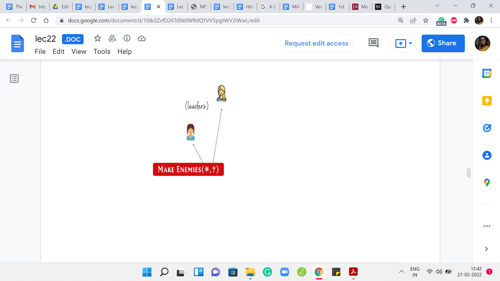 

Now, let us turn to the MAKE ENEMIES operation. Just like with MAKE FRIENDS, when we are asked to MAKE ENEMIES, we will approach the leaders because those are the people between whom we want to establish the enemy team. That will take care of the clusters pretty much by inference. Also if you remember, the way that we address the ‘ARE ENEMIES?’ query - this is really all that we need to keep track of.
Once again, just make sure that you handle the contradictory situation. In particular, if these two people involved here are already friends, then you need to output -1 and completely ignore this query. Similarly, another easy situation is if they are already enemies. In this case, for a different reason, you do not need to do anything because this relationship has already been established.
We can move along. But now suppose that they are not already enemies. We want to, again, do a case analysis that is similar to what we had before. Suppose these are coming from two components that are hanging in isolation. Neither of these leaders have any known enemies. Then again, just as before, it is a matter of doing a simple pointer update.
Notice that we do not need to do any unions here. These clusters, in fact, must remain separated. But, they sort of get magnetically attached through this rivalry relationship. That is being tracked by the red pointers. The red pointers that we were visualizing in the picture from a few moments ago are what is being tracked by the enemy arrays. Just keep that at the back of your mind. That is what we do in this case.
(Refer Slide Time: 13:48)
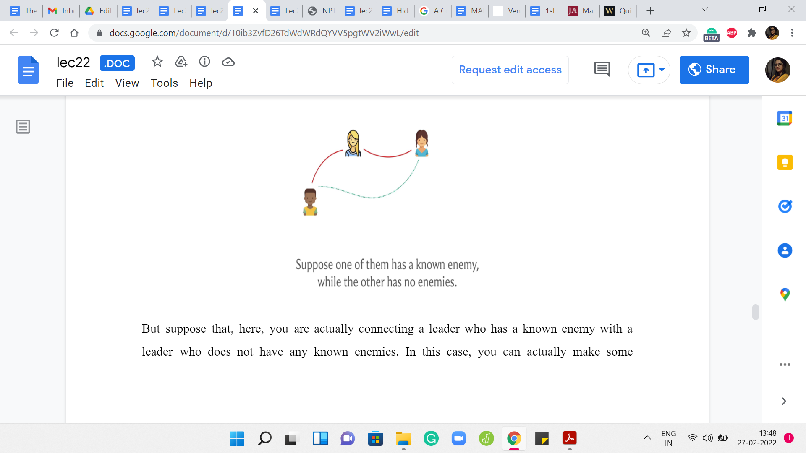 


But suppose that you are actually connecting a leader who has a known enemy with a leader who does not have any known enemies. In this case, you can actually make some additional inferences. Pause here for a moment and think about what is an extra relationship that comes out of this situation.
If you remember the rule about how a common enemy makes for a friendship, you will realize that these two leaders can actually become friends. If you establish an enmity between two leaders, and one of them already has an existing enmity, then you actually have a good reason to merge some two clusters.
Just to make the cluster perspective a little more explicit, let us actually pull up a picture in terms of clusters. Notice that you are trying to establish an enmity between the cluster on the left and the cluster in the middle. That is the query. That is what we have been asked to do. But the cluster on the left has a known enmity with the cluster on the right, which means that by the common enemy rule we know that these two clusters must actually be friends.
What we do first is we go ahead and merge these two clusters, and just to record that inferred friendship, and now depending on whether this merger created a new leader or not, we have to figure out if the enemy pointer needs to be updated. That is what is going on in this case.
(Refer Slide Time: 15:18)
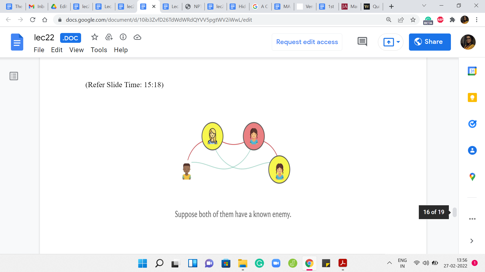 
The final situation is: If both the leaders have known enemies. Here, what is going to happen is that you can make some extra inferences as before. In particular, you can infer these two friendships. Once again, the reason that you can infer these friendships is because of the common enemy rule. For example, the person in the red circle is a common enemy for the two people in the yellow circle.
That is why you can infer the friendship between them. It is symmetric for the other friendship relationship. How do you handle this situation? How do you put these new friendships on the record? Remember, we are tracking friendships with the standard disjoint sets model. What will happen is, you will end up essentially merging the sets that these pairs belong to.
The two people in the yellow circles and the two people in the green circles, we go ahead and merge the sets that they belong to. After that merger is done, each of these two sets is going to have a new leader element emerge, which is going to be one of these existing leaders. But you are going to have the leaders identified after you do the union.
The final step is to make sure that these two new leaders have the enmity relationship between them put on the record. That is all that you need to do here. That brings us to the end of the description of how you handle the MAKE ENEMIES operation. With this, we are in fact done with both the MAKE FRIENDS and the MAKE ENEMIES operations.
(Refer Slide Time: 16:58)
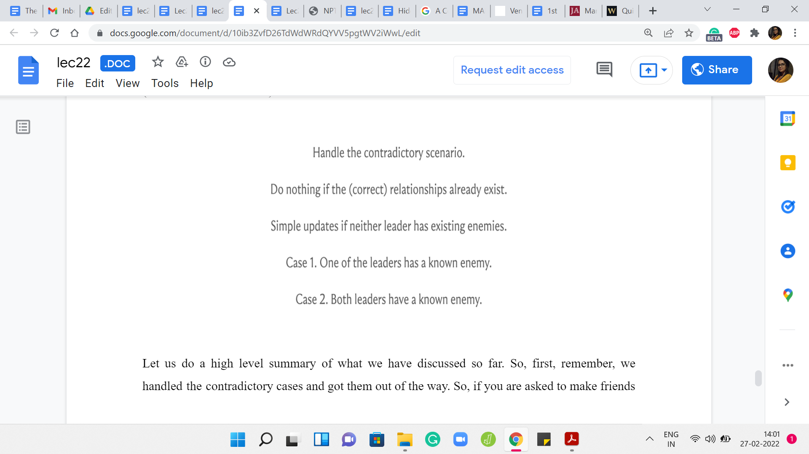
Let us do a high-level summary of what we have discussed so far. First, remember, we handled the contradictory cases and got them out of the way. If you are asked to make friends between two enemies, or you are asked to make enemies between two friends, then we remember to output -1 and we move on.
Similarly, if the two people of whom you want to make friends are already friends or the two people you want to make enemies are already enemies, then once again, there is nothing that needs to be done and this is an easy case as well. The third easy case is: When the two people involved in the queries do not have any known enemies of their own.
In this case, for MAKE FRIENDS, this was a simple union, a merging of two clusters. In the case of the MAKE ENEMIES operation, it was just a matter of updating the enemy pointers between the leaders. Now, the non-trivial case is where, when one of the leaders had an own enemy and the other one did not, or when both of the leaders had their own known enemies.
In both of these cases, you could infer some extra relationships. This involved carefully merging some sets that you did not have to directly merge because of the operation but by inference. Then just keeping track of the new leaders and making sure that the enemy pointers are cleanly updated. The specifics of how you handle these two cases, we have already discussed.
In case you missed it, you might want to just go back and look at that part of the discussion in the video. That brings us to the end of the algorithm. I think by now you have all the information that you need to actually implement this. We will do a quick overview of the implementation in the last segment of this module. The code in the implementation actually very closely follows the description.
I am going to not do a very elaborate overview because this is a slightly non-trivial problem and it is a really good exercise to try on your own. In the implementation video, we will sort of briefly summarize the main modifications to the unionFind class. Go over a few of the cases and leave out the ones that are either symmetric or very similar to the cases that we have seen before. Hopefully, you have a chance to actually work through this yourself and treat the implementation excursion as an elaborate hint, rather than a line-by-line explanation.
I will see you in the implementation video. In the meantime, if you have any questions or comments about this problem, then please do leave a note in the YouTube comment section. Or feel free to start a conversation in discord or at the Google Groups mailing list. We will as always look forward to hearing from you and I will see you in the final segment, which is going to cover the implementation!